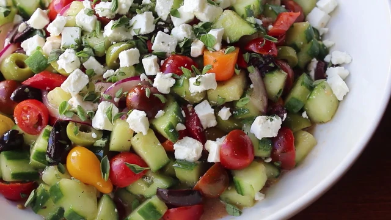

My Big Fat Greek Salad

Description
You can't go wrong with this Greek salad, especially if you remember the only and most important tip: toss it with the vinegar first before adding olive oil. If you don't, it will not taste as good. Which reminds me, giving the amounts here is very difficult, since this really should be made to your tastes, so please use the ingredient list as a very rough outline.
Ingredients
- 2 large English cucumbers
- 1 pinch kosher salt
- 2 cups cherry tomatoes
- ¼ red onion
- ½ red bell pepper
- ½ cup pitted Kalamata olives
- ½ cup pitted green olives
- 2 tablespoons minced fresh oregano
- salt and freshly ground black pepper to taste
- 1 pinch cayenne pepper, or to taste
- ¼ cup red wine vinegar, or to taste
- ⅓ cup olive oil, or to taste
- 1 (4 ounce) package feta cheese, diced, divided
- 1 teaspoon minced fresh oregano, or to taste
Directions
- Peel off a few strips of cucumber skin using a channel knife, creating a striped pattern. Cut cucumbers in half crosswise. Cut each half into quarters before cutting into 1/4- to 1/2-inch slices. Place into a colander; toss with some kosher salt and let sit for 10 to 15 minutes.
- Meanwhile, cut cherry tomatoes in half. Rinse cucumbers; drain thoroughly for 10 to 15 minutes more.
- While cucumbers are draining, slice onion thinly. Cut bell pepper into strips. Turn knife diagonally and cut strips into diamond-shaped pieces. Slice Kalamata and green olives.
- Combine cucumbers, tomatoes, onion, bell pepper, olives, and 2 tablespoons oregano in a bowl. Season with salt, black pepper, and cayenne. Sprinkle in vinegar and toss thoroughly. Drizzle in olive oil. Add about 2/3 of the feta cheese and toss again. Cover with plastic wrap and refrigerate for 30 to 60 minutes.
- Give the salad another mix. Taste and season as desired. Scatter remaining feta cheese on top and garnish with remaining oregano.
Notes
If you need to make this the day before, I suggest making the dressing separately, and then mixing everything before the event. I think this should only be dressed about 30 to 60 minutes before service for maximum enjoyment, but that's just my approach, and some folks prefer an overnight marination.
Use 1/2 teaspoon dried oregano if you don't have the fresh kind.
Between 4 and 6 ounces of feta cheese work well here.